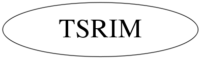

Function Members (Methods)
public:
| TSRIM() | |
| TSRIM(const TSRIM&) | |
| TSRIM(const char* infilename, double emax = -1.0, double emin = 0.0, bool printfile = true) | |
| ~TSRIM() | |
| static TClass* | Class() |
| double | GetAdjustedEnergy(double energy, double distance, double stepsize = dx) |
| double | GetEmax() |
| double | GetEmin() |
| double | GetEnergy(double energy, double dist) |
| double | GetEnergyChange(double energy, double dist) |
| TGraph* | GetEnergyLossGraph() |
| double | GetEnergyLost(double energy, double distance, double stepsize = dx) |
| TGraph* | GetEvsXGraph() |
| TSpline3* | GetEvsXSpline() |
| double | GetXmax() |
| double | GetXmin() |
| TGraph* | GetXvsEGraph() |
| TSpline3* | GetXvsESpline() |
| virtual TClass* | IsA() const |
| TSRIM& | operator=(const TSRIM&) |
| void | ReadEnergyLossFile(const char* filename, double emax = -1.0, double emin = 0.0, bool printfile = true) |
| virtual void | ShowMembers(TMemberInspector&) |
| virtual void | Streamer(TBuffer&) |
| void | StreamerNVirtual(TBuffer& ClassDef_StreamerNVirtual_b) |
Data Members
private:
| map<std::pair<double,double>,double> | AdjustedEnergyMap | |
| vector<double> | E | units of keV |
| double | Emax | |
| double | Emin | |
| vector<double> | IonEnergy | |
| vector<double> | X | units of um |
| double | Xmax | |
| double | Xmin | |
| vector<double> | dEdX | |
| static const double | dx | um [sets accuracy of energy loss E vs X functions] |
| TGraph* | fEgetX | |
| TGraph* | fEnergyLoss | |
| TGraph* | fXgetE | |
| TSpline3* | sEgetX | |
| TSpline3* | sEnergyLoss | |
| TSpline3* | sXgetE |
Class Charts



Function documentation
TSRIM()
TSRIM(const char* infilename, double emax = -1.0, double emin = 0.0, bool printfile = true)
void ReadEnergyLossFile(const char* filename, double emax = -1.0, double emin = 0.0, bool printfile = true)
if Steffen makes a TSRIM file that this thing can't read it's beacuse of mac encoding. use dos2unix -c mac d_in_Si.txt in terminal
double GetEnergy(double energy, double dist)
double GetAdjustedEnergy(double energy, double distance, double stepsize = dx)
TSRIM()
double GetEnergyLost(double energy, double distance, double stepsize = dx)
{return energy-GetAdjustedEnergy(energy,distance,stepsize);}